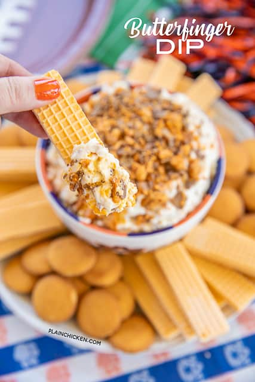

Butterfinger Dip

**Super Easy Dip**
Only 4 ingredients and ready in minutes! Make it a day in advance and refrigerate until ready to serve.
Ingredients:
- 2 (8oz) packages cream cheese, room temp
- 1 (8oz) container cool whip, thawed
- 1/4 cup brown sugar
- 5 (2.1-oz) Butterfinger candy bars, crushed
Instructions:
- Beat cream cheese and brown sugar with a handheld mixer until light and fluffy
- Fold in cool whip and Butterfinger bits until fully incorporated.
- Cover and chill until ready to serve.